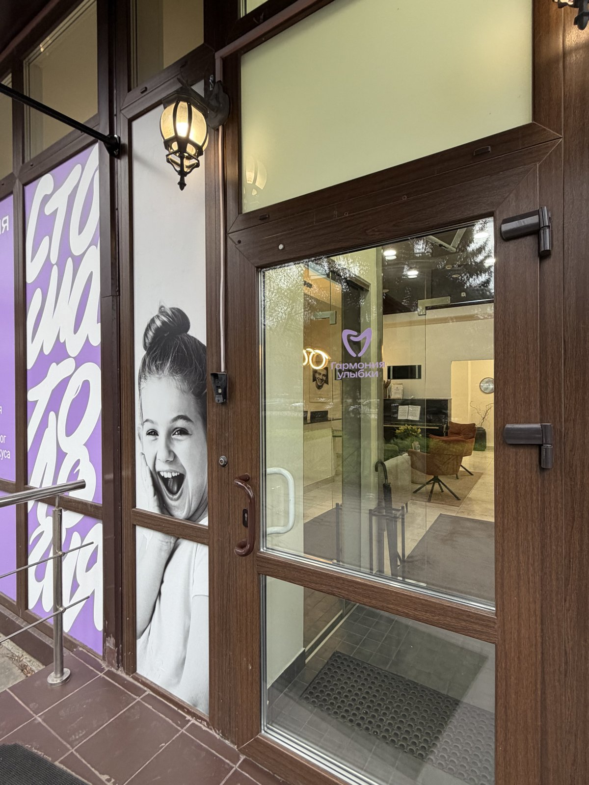

Стоматология в Московском районе — рядом с метро Московская
«Гармония Улыбки» — стоматология в Московском районе Санкт-Петербурга, на пр. Юрия Гагарина, 18к1, примерно в 10 минутах пешком от метро «Московская». Мы работаем с 2016 года, у нас 14 врачей и собственная операционная.
Если вы живёте или работаете рядом — на Гагарина, Звёздной, Московской или в кварталах вдоль Московского проспекта, — к нам удобно зайти после работы или в выходной: мы принимаем ежедневно с 9:00 до 21:00, без выходных.
Лечим, чтобы сохранить ваш зуб. Без осуждения, даже если вы давно не были у стоматолога, и без давления «полечить всё сразу». КТ (объёмный 3D-снимок челюсти) — бесплатно, первичная консультация 1 200 ₽ (зачтём в стоимость лечения, если лечитесь у нас).
Где мы находимся и как добраться
Мы в Московском районе, на пр. Юрия Гагарина, 18к1, рядом с метро «Московская». Принимаем без выходных, с 9:00 до 21:00.

- Пешком от метро. От станции «Московская» до нас — около 10 минут пешком. Точный маршрут до двери постройте по кнопке ниже.
- На машине. Удобный заезд со стороны пр. Юрия Гагарина — у клиники есть бесплатная парковка.
- Не нашли вход? Позвоните +7 (812) 660-80-88 — подскажем дорогу. Личный куратор на связи 24/7 в Telegram, MAX и ВКонтакте.
Почему удобно жителям Московского района
Главное, ради чего стоит выбирать клинику рядом с домом, — экономия времени и спокойствие.
- Близко. Несколько минут от метро «Московская» — не нужно ехать через весь город на лечение или на контрольный осмотр.
- Работаем без выходных, 9:00–21:00. Можно записаться на вечер после работы или на выходной.
- Своя операционная. Это редкость для клиники такого размера — поэтому мы беремся за сложные случаи, которые часто отправляют в стационар.
- Цена понятна заранее. Стоимость называем после осмотра и КТ и фиксируем в договоре — она не вырастает по ходу лечения.
- Без переплат за вход. КТ — бесплатно, первичная консультация 1 200 ₽ (зачтём в стоимость лечения, если лечитесь у нас). Есть рассрочка 0% и помощь с налоговым вычетом 13%.
Что мы лечим
В клинике на Гагарина — полный объём стоматологической помощи для взрослых и детей. Выберите направление, чтобы узнать подробности и цены:
- Лечение кариеса и пульпита — сохраняем зуб, а не удаляем при первой возможности.
- Имплантация и All-on-4 — от одного импланта до восстановления всей челюсти.
- Брекеты и элайнеры — выравнивание прикуса с понятной ценой.
- Виниры — эстетика передних зубов.
- Протезирование и коронки — восстановление формы и жевания.
- Детская стоматология — лечим детей без страха и слёз.
- Удаление зубов, в том числе зубов мудрости.
- Профессиональная гигиена и отбеливание.
- Лечение зубов во сне — под седацией или наркозом, если есть сильный страх или большой объём за визит.
Если не знаете, с чего начать, — приходите на консультацию (1 200 ₽, зачтём в лечение) и бесплатное КТ. Врач посмотрит и предложит план, без давления.
Наши врачи
В клинике принимают 14 врачей: терапевты, хирурги-имплантологи, ортодонты, ортопеды, детский стоматолог, анестезиолог. Многие ведут пациентов годами, с открытия клиники в 2016 году.
За каждым пациентом закрепляется лечащий врач и личный куратор, который остаётся на связи 24/7 — по любому вопросу можно написать в мессенджер, не дожидаясь следующего приёма.
Познакомиться со всей командой и почитать о специализациях врачей можно на странице о клинике и в разделе «Врачи».
Отзывы и запись
О нас оставили 214 отзывов на Яндекс.Картах с показателем качества 96%. Реальные оценки пациентов из Московского района и других частей города можно почитать прямо в карточке клиники на картах.
Записаться можно так, как удобно:
- по телефону +7 (812) 660-80-88 (ежедневно 9:00–21:00);
- в мессенджерах — Telegram (@garmony_stomabot), MAX, ВКонтакте (vk.com/gu.gagarina);
- через форму записи на сайте.
Построить маршрут до клиники можно прямо со страницы — кнопка в блоке «Как добраться».
Частые вопросы
Где находится клиника и как доехать?
Санкт-Петербург, пр. Юрия Гагарина, 18к1, Московский район. От метро «Московская» — около 10 минут пешком, у клиники есть бесплатная парковка. Постройте точный маршрут до двери по кнопке на странице, а узнать вход поможет фото. Если заблудитесь — позвоните +7 (812) 660-80-88, подскажем дорогу.
Сколько идти пешком от метро «Московская»?
От метро «Московская» до клиники около 10 минут пешком — мы на пр. Юрия Гагарина, 18к1. Узнать вход поможет фото на странице: стеклянные двери с фонарём и логотипом «Гармония Улыбки».
Есть ли парковка рядом?
Да, у клиники есть бесплатная парковка. Заезд на машине — со стороны пр. Юрия Гагарина.
Вы работаете по выходным?
Да. Мы принимаем ежедневно, без выходных, с 9:00 до 21:00. Можно записаться на субботу, воскресенье или на вечер буднего дня.
Где можно сделать КТ (3D-снимок) в Московском районе?
КТ-снимок делаем прямо в клинике на пр. Юрия Гагарина, 18к1. Для первичной диагностики КТ — бесплатно, первичная консультация 1 200 ₽ (зачтём в стоимость лечения, если лечитесь у нас).
Принимаете ли вы детей?
Да, у нас есть детский стоматолог, лечим детей без страха и боли. Подробности — на странице детской стоматологии.
Можно ли записаться через мессенджер?
Да. Напишите в Telegram (@garmony_stomabot), MAX или ВКонтакте (vk.com/gu.gagarina) — личный куратор на связи 24/7 и поможет подобрать удобное время.
Сколько будет стоить лечение?
Стоимость называем после осмотра и КТ и фиксируем в договоре — она не растёт по ходу лечения. КТ бесплатно, первичная консультация 1 200 ₽ (зачтём в стоимость лечения, если лечитесь у нас), есть рассрочка 0% и помощь с налоговым вычетом 13%.
- Перечень направлений (гнатология, ранняя ортодонтия, серебрение, герметизация и т.п.) и состав 14 врачей по специализациям — подтвердить актуальный список у клиники перед публикацией.
- Утверждение «беремся за сложные случаи благодаря собственной операционной» — проверить корректность формулировки с клиникой (без обещания конкретных результатов).
- Координаты для встраивания интерактивной карты с кнопкой построения маршрута (Яндекс.Карты / Google Карты).
- Подтвердить, какой телефон основной для этой страницы: +7 (812) 660-80-88 или +7 (812) 223-91-46 (в шапке текущего сайта разные номера).
- Ссылка/якорь на страницу или раздел со всеми 14 врачами для блока «Наши врачи».
Начните с консультации и бесплатного КТ
Осмотр, 3D-снимок и план лечения с фиксированной в договоре ценой. Консультацию зачтём в лечение, если начнёте у нас, — без навязанных услуг.
+7 (812) 660-80-88